5 Bedienung
5.1 Sensoren starten
- Um einen Sensor zu starten, klicken Sie auf eine der großen Sensor-Schaltflächen auf der Startseite der Web-Oberfläche.
Hinweis
Haben Sie einen ATMOSPHERE in der Daisy-Chain angeschlossen, können Sie diesen über einen Doppelklick aktivieren.
- Zum Starten aller Sensoren betätigen Sie auf START ALL (Raketen-Symbol).
Hinweis
Zum Starten aller angeschlossenen ATMOSPHERE klicken Sie auf START ATMOSPHERE (Wetter-Symbol).
- Zum Stoppen eines Sensors klicken Sie ein zweites Mal auf die Sensor-Schaltfläche.
- Zum Stoppen aller Sensoren klicken Sie auf STOP ALL (STOP-Symbol).
Jede Farbe kennzeichnet Messwerte eines bestimmten Sensors:
| Messwert | Farbe |
|---|---|
| Winkel- bzw. Höhenmesswerte | Grün |
| Atmosphärische Messwerte | Blau |
| Lastmesswerte | Gelb |
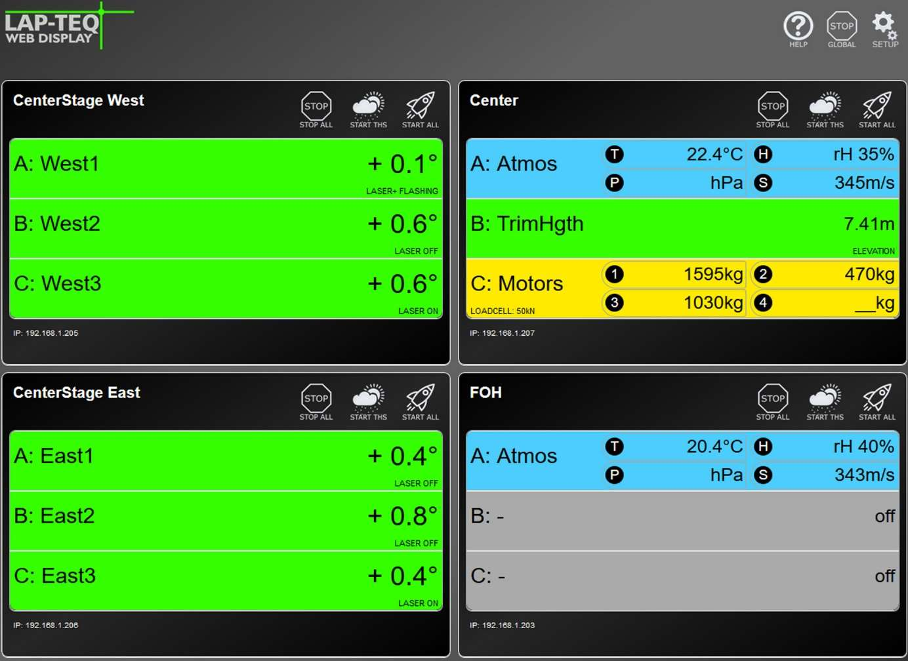
5.2 Software Updates
Achtung!
Gefahr von Geräteschäden!
Schließen Sie sämtliche Browserfenster mit einer Verbindung zum Interface. Der Updatevorgang dauert in etwa 60 Sekunden. Trennen Sie das Gerät währenddessen nicht vom Strom oder Internet.
Um die Firmware des Interface zu updaten, benötigen Sie eine stabile Internetverbindung. Schließen Sie das Interface an einen Router und geben Sie die entsprechende IP-Adresse, Subnetzmaske und Gateway-Adresse ein um sich mit der Web-Oberfläche zu verbinden.
- Klicken Sie auf SETUP (Zahnrad-Symbol).
- Klicken Sie auf den Button Update Firmware.
Nach Beendigung des Vorgangs wird ein Updatebericht angezeigt und die Startseite des Gerätes kann wieder geladen werden.
Hinweis
Sollten auf der Web-Oberfläche keine Änderungen sichtbar sein, muss der Cache des Browsers geleert und die Seite anschließend neu geladen werden.
5.3 Reset des Interface
Das Gerät kann, ohne Zugriff auf die Weboberfläche, zurückgesetzt werden. Dafür befindet sich an der Vorderseite des Geräts ein versenkter Knopf, dieser muss mit einem spitzen Gegenstand länger als 5 Sekunden gedrückt werden.
Dabei werden die Grundeinstellungen bei der Auslieferung wiederhergestellt. Folgende Einstellungen sind betroffen:
- IP-Adresse: 192.168.1.222
- Subnetzmaske: 255.255.255.0
- Gateway: 192.168.1.1
- Sensornamen
- Notizen
5.4 Atmosphere Analyzer
Der Atmosphere Analyzer ist die neueste Erweiterung des Interface. Damit lassen sich die Übertragungseigenschaften der Luft, modellhaft abbilden. Aus den atmosphärischen Messwerten des LAP-TEQ PLUS Atmosphere, kann eine zeitliche Veränderung der akustischen Bedingungen dargestellt werden. Die Schallgeschwindigkeit und Dämpfung der Luft (Dissipation) hängen unmittelbar von Luftfeuchte und Temperatur ab. Diese können im Zeitraum von Einrichtung des Systems bis zur Show stark variieren. Insbesondere der Anteil des Wasserdampfs ist von Temperatur und Druck abhängig, dieser wiederrum verändert die frequenzabhängige Absorption.
Durch den Atmosphere Analyzer werden die atmosphärischen Messwerte des LAP-TEQ PLUS Atmosphere übersichtlich interpretiert und können den Tontechniker:innen Hinweise geben ob und wie das System eventuell angepasst werden muss.
Hinweis
Der Atmosphere Analyzer befindet sich zum Zeitpunkt der Veröffentlichung (16.04.2024) in einer frühen Betaphase. Der Umfang der Software kann jederzeit angepasst werden und es besteht kein Anspruch auf fehlerfreie Funktion.
Hinweis
Festgestellte Fehler, können gerne mit dem Betreff Issue Atmosphere Analyzer Beta an support@teqsas.de gesendet werden. Bitte eine möglichst genaue Beschreibung des Fehlers, die Versionsnummer und weitere Informationen beifügen.
Gestartet wird der Atmosphere Analyzer über das Symbol auf der Interface Web-UI. Sollte das Symbol nicht sichtbar sein, ist die Software des Interface noch nicht auf dem aktuellsten Stand. Dazu bitte Kapitel 5.2 Software Updates beachten.
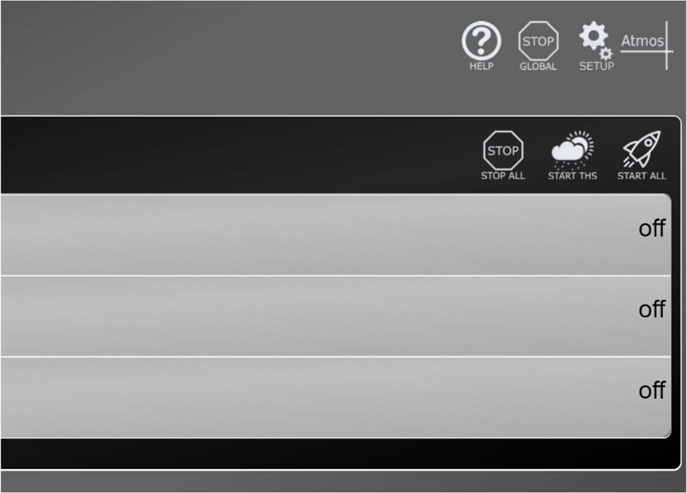
5.4.1 Übersicht
Die Oberfläche ist in drei Bereiche aufgeteilt, unten können die ATMOSPHERE Sensoren hinzugefügt werden. In dem Bereich oben Links/Mitte wird die Dämpfung der Luft angezeigt und rechts daneben werden die Gruppen angezeigt.
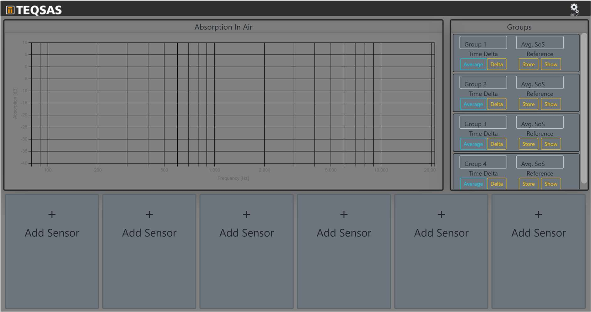
5.4.2 Sensor
Sensor verbinden
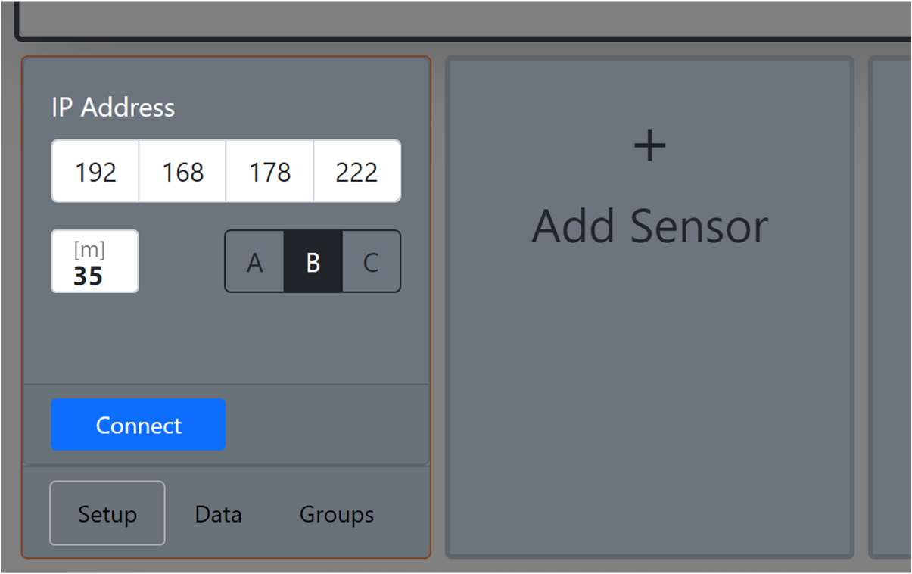
Um einen Sensor hinzuzufügen, klickt man auf eine der Karten Add Sensor im unteren Bereich. Dort gibt man die Netzwerkadresse des INTERFACE und den Port, an dem der Sensor steckt, ein. Weiterhin wird hier der Abstand eingegeben, der im Modell simuliert werden soll, eingegeben. Anschließend stellt man die Verbindung über den Button Connect her.
Sensor Funktionen
Sobald die Verbindung hergestellt ist, werden die Messwerte des Sensors und die eingestellte Entfernung genutzt, um die Luftabsorption zu berechnen. Bewegt man die Maus im Diagramm über die Kurve, kann man die genauen Werte ablesen.
Im Bereich des Sensors, werden die aktuellen Messwerte angezeigt und es kann über den Button Show gesteuert werden, ob die Kurve angezeigt werden soll oder nicht. Direkt darunter befindet sich der Referenzbereich. Dieser wird aktiv, sobald man auf den Button Store Ref. drückt. Über den Button werden die aktuellen Messwerte gespeichert und die Kurve kann nun auch im Diagramm angezeigt werden. Erst bei erneutem Drücken des Store Ref.-Button werden die Messwerte überschrieben.
Die gespeicherten Referenz-Messwerte können auch Offline angezeigt werden. Die Daten werden im Browser gespeichert und sich dadurch auch nur über den gleichen Browser verfügbar. Die Messung sollte also mit dem gleichen Computer durchgeführt werden, mit dem auch später überwacht wird.
- Achtung: die alten Messwerte sind unmittelbar nach dem Betätigen überschrieben und es wird aktuell auch noch nicht davor gewarnt
- Es ist sinnvoll den Sensor direkt nach dem Verbinden schonmal zu speichern, da so auch die Verbindungsdaten gespeichert werden. So ist es einfacher möglich die Seite neu zu laden, ohne alle Sensoren wieder einzeln zu verbinden.
Im Diagramm werden die Kurven eines Sensors in gleicher Farbe dargestellt, wobei die Referenz-Messung gestrichelt und die Live-Messung durchgezogen dargestellt wird. Auch hier, kann die Anzeige im Diagramm über den Button Show an-/ ausgeschaltet werden.
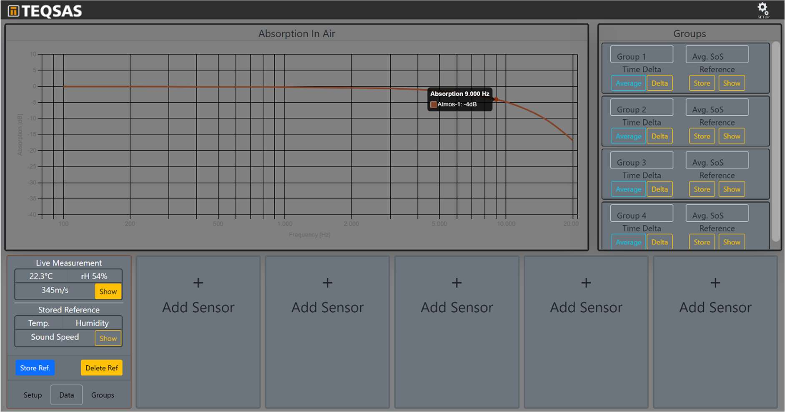
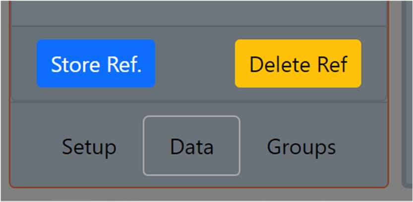
Über die Tabs Setup, Data und Groups kann man die Ansicht des Sensors ändern. In dem Tab Setup können die Grundeinstellungen des Sensors geändert werden. Im Data-Tab werden die Messwerte angezeigt und über den Tab Groups kann der Sensor einer von vier Gruppen zugewiesen werden.
5.4.3 Gruppen
Sensoren können in Gruppen zusammengefasst werden, dabei kann eine Gruppe auch bloß aus einem einzelnen oder vielen Sensoren bestehen. Im Tab Groups kann der Sensor Gruppen zugewiesen werden.
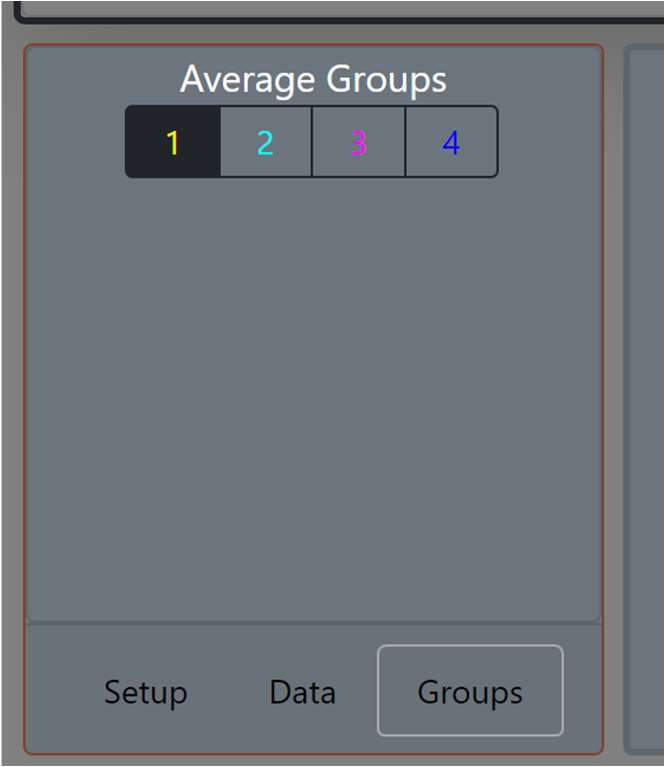
Sobald einer Gruppe Sensoren hinzugefügt wurden, wird die Gruppenkurve im Diagramm angezeigt.
Gruppenname und Referenz
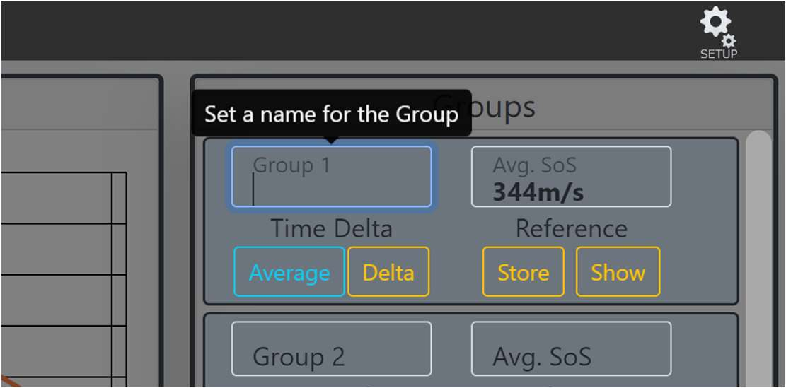
Im Bereich der Gruppenansicht wird die mittlere Schallgeschwindigkeit angezeigt. Weiterhin kann der Name der Gruppe geändert werden. Dazu einfach ins Namensfeld klicken und den Namen ändern. Genau wie ein Sensor, kann auch eine Referenz der Gruppe angelegt werden. Diese kann auch Offline angezeigt werden.
Zeit-Delta
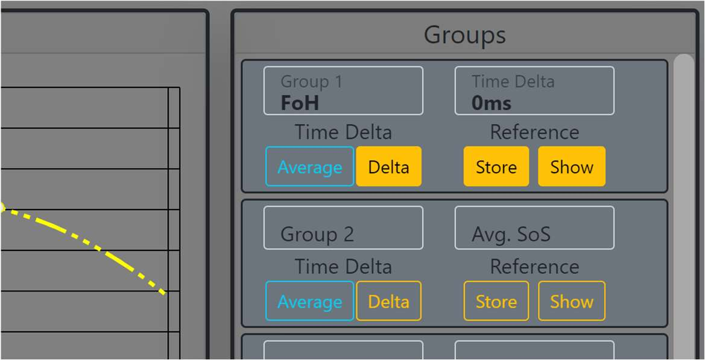
Sobald eine Referenz der Gruppe gespeichert ist und die hinzugefügten Sensoren Live sind, kann über den Button Delta die zeitliche Differenz zwischen Referenzmessung und aktuellem Zeitpunkt angezeigt werden. Dieser ergibt sich aus einer geänderten Lufttemperatur und bezieht sich auf die mittlere Entfernung, der hinzugefügten Sensoren. Diese Funktion ist nicht verfügbar, wenn sich seit Speicherung der Referenz und aktuellem Zeitpunkt die Entfernung eines Sensors verändert hat.
Gruppen-Mittelung
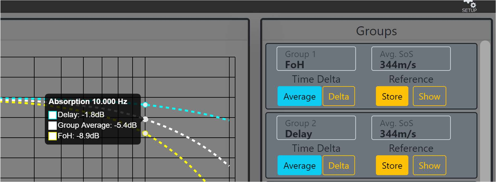
Wenn mehr als eine Gruppe angelegt ist, kann über den Button Average eine Mittelung der Luftabsorption über die Gruppen angezeigt werden.
5.4.4 Einstellungen
Über den Button Setup oben rechts können die genutzten Einheiten angepasst werden.
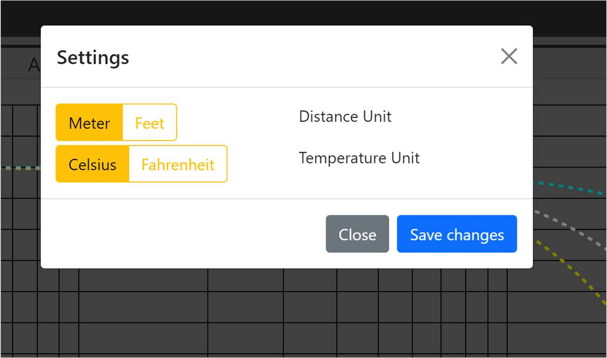